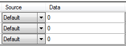

If there was not CAN configuration loaded at the form start up, click the ‘Load CAN Configuration’ button  of the tool bar to load one.
of the tool bar to load one.
Once loaded, all CAN parameters contained in CAN messages set with ‘Transmission’ (Tx) flag will be display in the grid.

Each row of the grid represents a CAN parameter and has three groups of two columns.
Those three groups are respectively, ‘Pre-cycle’, ‘Cycle’ and ‘Post-cycle’ parts of the cycle.
The two columns of each group are configuration of the CAN parameter for a given cycle part.

Column ‘Source’ defines the data source for the CAN parameter. Click the ‘Source’ cell to drop the source list down and pick up the desired source.
There are six possible sources:
If the ‘Source’ property is set to ‘BuiltSignal’ or ‘VirtualChannel’, click the ‘Data’ cell to get the list of items available.

Available item list takes a form of a tree where libraries are roots of the tree and items (virtual channels or built-in signals are branches. Just double-click an item to select it as data source of the CAN parameter.

If the ‘Source’ property is set to ‘AcqData’, click the ‘Data’ cell to get the list of data channels available. Simply double-click a channel to select it as data source of the CAN parameter.

You don’t need here to select a source for each CAN parameter and for all cycle parts. If a cycle part length is null, it won’t generated so it can be ignored while selecting data sources of CAN parameters.
Once all CAN parameter of your interest are set, click the ‘Build cycle’ button  to launch the cycle creation.
to launch the cycle creation.
At the first cycle building, a ‘file save’ dialog pops up. Set the name and path of the output cycle file. The cycle can be built several times but the ‘file save’ dialog will show up only once.
During cycle building, the ‘Abort’ button  will appear. Click this button at any time while CANStream is building the cycle to cancel the process.
will appear. Click this button at any time while CANStream is building the cycle to cancel the process.
At the end of the cycle creation process, a message box will pop up indicating that cycle has been successfully created.
In addition, a graphic preview of the cycle will be drawn on right side of the form.

As per the cycle player graph, right click in the graph to select traces that you want to see in the graphic.

Created with the Personal Edition of HelpNDoc: Free Web Help generator